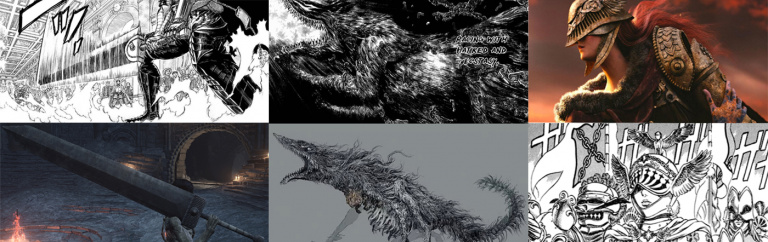
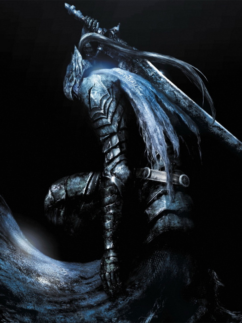
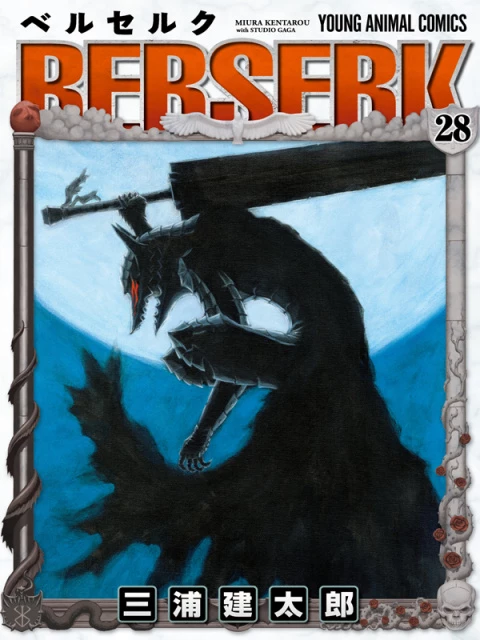
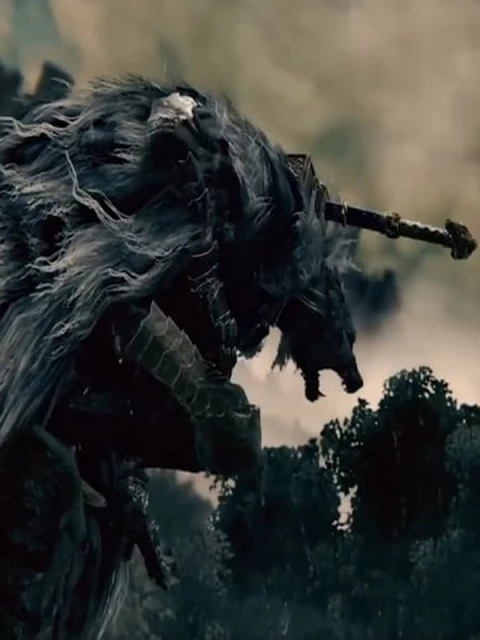

---------------------------------------------------------


Elden Ring, Dark Souls : Les héritiers du manga Berserk et de Kentaro Miura ?
Video: ELDEN RING - All Berserk References so far
From COGINC
https://www.youtube.com/watch?v=ainCZwE1aO0
Dark Souls, et plus largement les licences de From Software, baignent plus ou moins significativement dans l’imaginaire du célèbre manga Berserk.
Une filiation dûe principalement à l’amour que porte Hidetaka Miyazaki, le président du studio, pour l’œuvre de Kentaro Miura. Plus qu’un simple hommage visuel,
Dark Souls et maintenant Elden Ring partagent aussi une philosophie issue de la vision teintée de ténèbres, mais terriblement humaniste, de feu le mangaka K.
Miura à tel point que ces licences constituent aujourd’hui un véritable héritage du maître de la Dark Fantasy.

L’imaginaire de Berserk : Un puits d’inspiration pour From Software
Les licences de From Software s’inscrivent principalement dans un univers de Dark Fantasy sombre et brutal.
Une vision forcément inhérente au genre, qui s’exprime directement à travers l’identité visuelle de ces titres.
Arsenal, bestiaire et personnages, architecture… chacun de ces éléments existent de manière cohérente en reprenant
minutieusement les codes pré-établis par les maîtres du genre.
Sur ce point, c'est certain, From Software n’a pas la prétention de réinventer complètement la formule et emprunte
largement à ses aînés, à commencer par Berserk.



Plus un hommage qu'une vraie copie conforme, le travail de From Software consiste à harmoniser selon son style des éléments directement issus du trait de Kentaro Miura.
On note ainsi de nombreuses références graphiques - totalement équivoques ou au contraire plus discrètes - au travail de Miura Sensei.
Elles sont majoritairement présentes au sein des Souls, mais on peut les retrouver dans l’intégralité des jeux dirigés par Hidetaka Miyazaki,
à tel point que c'est presque devenu une chasse aux trésors pour les fans. Ces inspirations, on les retrouve dans le triptyque que nous avons évoqué au-dessus :
Arsenal, bestiaire/personnages, architecture.
Des épées larges qui s'apparentent fortement à la Dragonslayer de Guts comme le brise-crâne dragon de Demon's Souls ou l'espadon de Dark Souls III et Elden Ring pour ne citer qu'elles.
Siegmeyer de Catarina porte une armure qui évoque celle de Bazuso, le chevalier que Guts affronte au début de l'arc de l'âge d'or. André le forgeron est le sosie de Godo, l'allié du guerrier noir dans Berserk.
Le bestiaire, et plus particulièrement les boss, sont autant d'ennemis issus de pro/antagonistes de Berserk. L'iconique démon taureau croisé au début de Dark Souls est un hommage équivoque à Nosferatu Zodd.
Les hommes serpents reprennent l'allure de l'apôtre éponyme. Quant au roi sans nom, il partage de nombreux points communs visuels avec le personnage du roi Gaiseric.